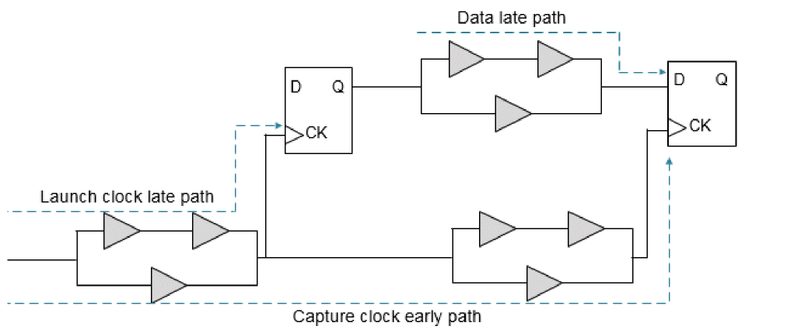
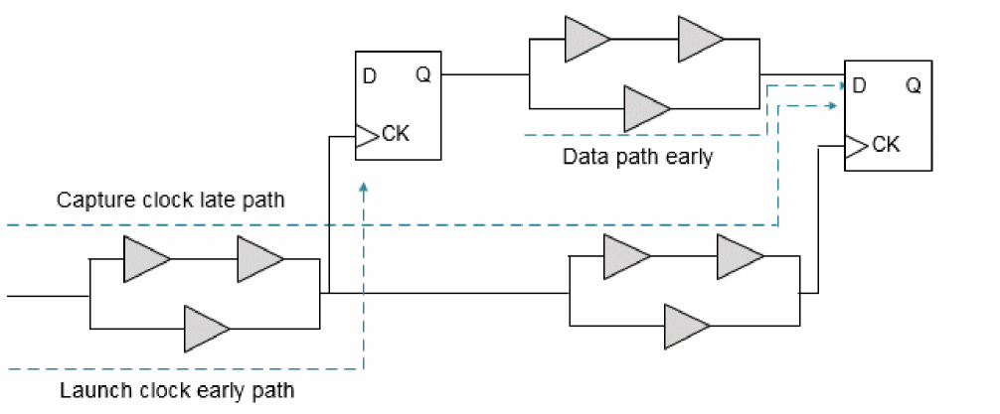

Timing Analysis Modes
- Overview
- Specifying Timing Analysis Mode Types
- Advanced On-Chip Variation (AOCV) Analysis
- Statistical On-Chip Variation (SOCV) Analysis
Overview
The Tempus software provides different timing analysis modes and accordingly performs calculations for setup and hold checks for each mode. For a better understanding of these modes, it is important to understand the impact of early and late paths in a design, as explained in the following section.
Definition of Early and Late Paths
Early and late paths are referred to as the shortest and longest paths, respectively, and are used for delay calculations. The early or minimum path delay is the minimum delay through cells and nets in the path. The late or maximum path delay is the maximum delay through cells and nets in the path.
The following figure shows a setup check with late launch clock and early capture clock:
Figure -55 Illustration of Setup Check- Setup check with early and late paths

The following figure shows a hold check with early launch clock and late capture clock.
Figure -56 Illustration of Hold Check - Hold check with early and late paths

Return to top